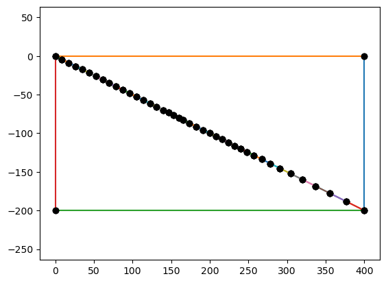
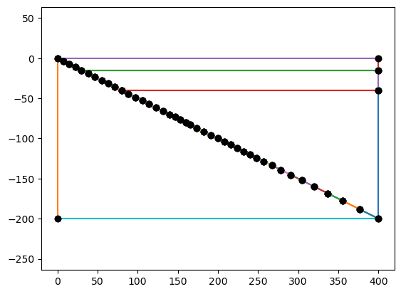
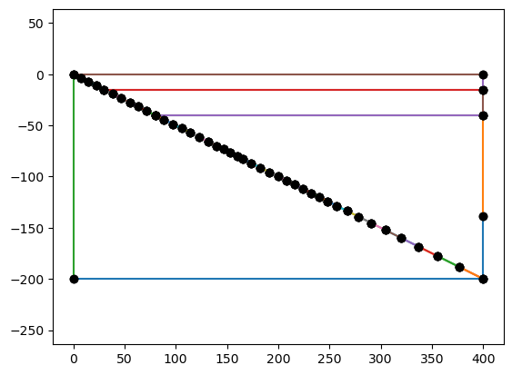
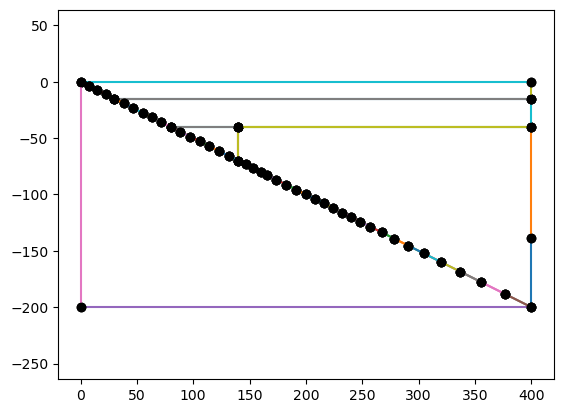
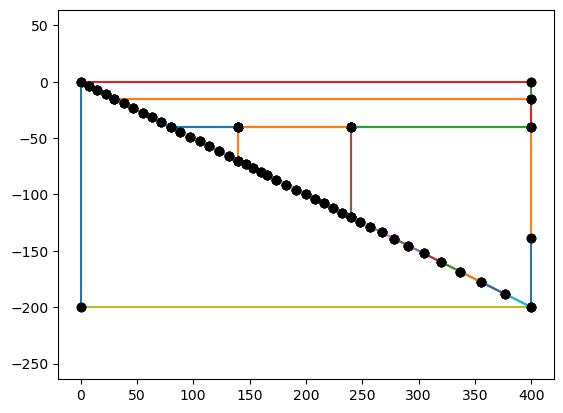
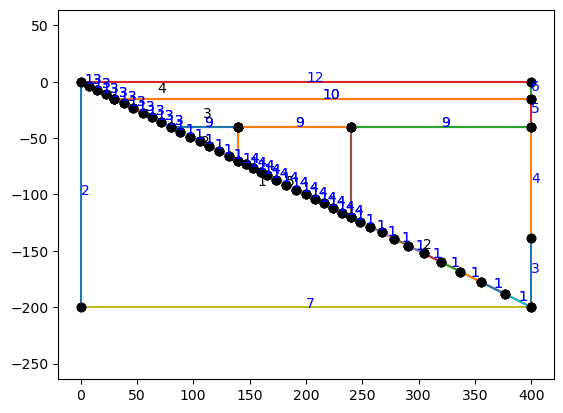

Benchmark Geometry#
Set up the PYTHONPATH so it can find the python modules we’ll be using.
import sys, os
sys.path.append(os.path.join(os.path.pardir, 'python'))
params_filename = os.path.join(os.pardir, "data", "default_params.json")
Load the default parameters
import json
with open(params_filename, "r") as fp:
default_params = json.load(fp)
Import the geometry module
import geometry as geo
Set the base resolution that will be used throughout
minres = 10.0
geo.SlabSpline?
coast_distance = 0
extra_width = 0
lc_depth = 40
uc_depth = 15
io_depth = 139
xs = [0.0, 140.0, 240.0, 400.0]
ys = [0.0, -70.0, -120.0, -200.0]
res = [1*minres if y >= -default_params["slab_diag_depth2"] else 3*minres for y in ys]
res
[10.0, 10.0, 10.0, 30.0]
# set up the surface ids for the slab depending on depth
sids = []
for y in ys[1:]:
if y >= -lc_depth:
sid = default_params['fault_sid']
elif y >= -default_params['slab_diag_depth1']:
sid = default_params['slab_sid']
elif y >= -default_params['slab_diag_depth2']:
sid = default_params['slab_diag_sid']
else:
sid = default_params['slab_sid']
sids.append(sid)
sids
[1, 14, 1]
# set up the slab spline
slab = geo.SlabSpline(xs, ys, res=res, sid=sids, name="Slab")
print(len(slab.points))
4
/Users/cwilson/anaconda3/envs/fenicsx-env/lib/python3.10/site-packages/scipy/optimize/_minpack_py.py:177: RuntimeWarning: The iteration is not making good progress, as measured by the
improvement from the last ten iterations.
warnings.warn(msg, RuntimeWarning)
# adding the coupling depths may or may not be necessary
# depending on if they were included in the slab spline data already or not
# the slab class should ignore them if they aren't necessary
slab.addpoint(default_params['partial_coupling_depth'], "Slab::PartialCouplingDepth",
res=default_params['partial_coupling_depth_res_fact']*minres,
sid=default_params['slab_diag_sid'])
slab.addpoint(default_params['full_coupling_depth'], "Slab::FullCouplingDepth",
res=default_params['full_coupling_depth_res_fact']*minres,
sid=default_params['slab_diag_sid'])
# add the slab detector point
slab.addpoint(default_params["slab_det_depth"], "Slab::DetectorPoint",
res=default_params["full_coupling_depth_res_fact"]*minres,
sid=default_params['slab_diag_sid'])
print(len(slab.points))
7
geo.SubductionGeometry?
geom = geo.SubductionGeometry(slab, **default_params,
wedge_side_top_res=default_params["wedge_side_top_res_fact"]*minres,
wedge_side_base_res=default_params["wedge_side_base_res_fact"]*minres,
slab_side_base_res=default_params["slab_side_base_res_fact"]*minres,
coast_res=default_params["coast_res_fact"]*minres,
coast_distance=coast_distance, extra_width=extra_width)
geom.plot()

# add a lower crust
geom.addcrustlayer(lc_depth, "LowerCrust",
sid=default_params["lc_base_sid"], rid=default_params["lc_rid"],
slab_res=default_params["lc_slab_res_fact"]*minres,
side_res=default_params["lc_side_res_fact"]*minres,
slab_sid=default_params["fault_sid"],
side_sid=default_params["lc_side_sid"])
geom.plot()
/Users/cwilson/anaconda3/envs/fenicsx-env/lib/python3.10/site-packages/scipy/optimize/_minpack_py.py:177: RuntimeWarning: The iteration is not making good progress, as measured by the
improvement from the last ten iterations.
warnings.warn(msg, RuntimeWarning)
geom.addcrustlayer(uc_depth, "UpperCrust",
sid=default_params["uc_base_sid"], rid=default_params["uc_rid"],
slab_res=default_params["uc_slab_res_fact"]*minres,
side_res=default_params["uc_side_res_fact"]*minres,
slab_sid=default_params["fault_sid"],
side_sid=default_params["uc_side_sid"])
geom.plot()

# add the pre-defined in-out point
geom.addwedgesidepoint(io_depth, "WedgeSide::InOut", line_name="UpperWedgeSide",
res=default_params["io_depth_res_fact"]*minres,
sid=default_params["upper_wedge_side_sid"])
geom.plot()

# add wedge dividers for the diagnostics
geom.addwedgedivider(default_params["slab_diag_depth1"], "ColdCorner",
slab_res=default_params["slab_diag_res2_fact"]*minres,
top_res=default_params["slab_diag_res2_fact"]*minres,
rid=default_params["wedge_rid"],
slab_sid=default_params["slab_sid"])
geom.plot()

# add wedge dividers for the diagnostics
geom.addwedgedivider(default_params["slab_diag_depth2"], "WedgeFocused",
slab_res=default_params["slab_diag_res1_fact"]*minres,
top_res=default_params["slab_diag_res1_fact"]*minres,
rid=default_params["wedge_diag_rid"],
slab_sid=default_params["slab_diag_sid"])
geom.plot()

geom.plot(label_sids=True, label_rids=True)

geom.writegeofile('benchmark.geo_unrolled')
mesh, ct, ft = geom.generatemesh()
Info : Writing 'benchmark.geo_unrolled'...
Info : Done writing 'benchmark.geo_unrolled'
Warning : Gmsh has aleady been initialized
Info : Meshing 1D...
Info : [ 0%] Meshing curve 1 (Line)
Info : [ 10%] Meshing curve 2 (Line)
Info : [ 10%] Meshing curve 3 (Line)
Info : [ 10%] Meshing curve 4 (Line)
Info : [ 10%] Meshing curve 5 (Line)
Info : [ 10%] Meshing curve 6 (Line)
Info : [ 20%] Meshing curve 7 (Line)
Info : [ 20%] Meshing curve 8 (Line)
Info : [ 20%] Meshing curve 9 (Line)
Info : [ 20%] Meshing curve 10 (Line)
Info : [ 20%] Meshing curve 11 (Line)
Info : [ 30%] Meshing curve 12 (Line)
Info : [ 30%] Meshing curve 13 (Line)
Info : [ 30%] Meshing curve 14 (Line)
Info : [ 30%] Meshing curve 15 (Line)
Info : [ 30%] Meshing curve 17 (Line)
Info : [ 30%] Meshing curve 18 (Line)
Info : [ 40%] Meshing curve 19 (Line)
Info : [ 40%] Meshing curve 20 (Line)
Info : [ 40%] Meshing curve 21 (Line)
Info : [ 40%] Meshing curve 22 (Line)
Info : [ 40%] Meshing curve 23 (Line)
Info : [ 50%] Meshing curve 24 (Line)
Info : [ 50%] Meshing curve 25 (Line)
Info : [ 50%] Meshing curve 26 (Line)
Info : [ 50%] Meshing curve 27 (Line)
Info : [ 50%] Meshing curve 28 (Line)
Info : [ 50%] Meshing curve 29 (Line)
Info : [ 60%] Meshing curve 30 (Line)
Info : [ 60%] Meshing curve 31 (Line)
Info : [ 60%] Meshing curve 33 (Line)
Info : [ 60%] Meshing curve 34 (Line)
Info : [ 60%] Meshing curve 35 (Line)
Info : [ 70%] Meshing curve 36 (Line)
Info : [ 70%] Meshing curve 37 (Line)
Info : [ 70%] Meshing curve 38 (Line)
Info : [ 70%] Meshing curve 39 (Line)
Info : [ 70%] Meshing curve 40 (Line)
Info : [ 80%] Meshing curve 42 (Line)
Info : [ 80%] Meshing curve 43 (Line)
Info : [ 80%] Meshing curve 44 (Line)
Info : [ 80%] Meshing curve 45 (Line)
Info : [ 80%] Meshing curve 46 (Line)
Info : [ 80%] Meshing curve 47 (Line)
Info : [ 90%] Meshing curve 48 (Line)
Info : [ 90%] Meshing curve 49 (Line)
Info : [ 90%] Meshing curve 51 (Line)
Info : [ 90%] Meshing curve 52 (Line)
Info : [ 90%] Meshing curve 53 (Line)
Info : [100%] Meshing curve 54 (Line)
Info : [100%] Meshing curve 55 (Line)
Info : [100%] Meshing curve 56 (Line)
Info : [100%] Meshing curve 58 (Line)
Info : [100%] Meshing curve 59 (Line)
Info : Done meshing 1D (Wall 0.00486242s, CPU 0.004949s)
Info : Meshing 2D...
Info : [ 0%] Meshing surface 1 (Plane, Frontal-Delaunay)
Info : [ 20%] Meshing surface 2 (Plane, Frontal-Delaunay)
Info : [ 40%] Meshing surface 3 (Plane, Frontal-Delaunay)
Info : [ 50%] Meshing surface 4 (Plane, Frontal-Delaunay)
Info : [ 70%] Meshing surface 5 (Plane, Frontal-Delaunay)
Info : [ 90%] Meshing surface 6 (Plane, Frontal-Delaunay)
Info : Done meshing 2D (Wall 0.00611121s, CPU 0.006038s)
Info : 455 nodes 1063 elements
import dolfinx
import numpy as np
import pyvista
pyvista.start_xvfb()
from dolfinx.plot import create_vtk_mesh
topology, cell_types, x = create_vtk_mesh(mesh, mesh.topology.dim)
grid = pyvista.UnstructuredGrid(topology, cell_types, x)
num_local_cells = mesh.topology.index_map(mesh.topology.dim).size_local
grid.cell_data["Marker"] = ct.values[ct.indices<num_local_cells]
grid.set_active_scalars("Marker")
p = pyvista.Plotter(window_size=[800, 800])
p.add_mesh(grid, show_edges=True)
p.view_xy()
p.show()
WARNING:py.warnings:/Users/cwilson/anaconda3/envs/fenicsx-env/lib/python3.10/site-packages/pyvista/jupyter/notebook.py:58: UserWarning: Failed to use notebook backend:
Your build of VTK does not have the proper web modules enabled.
These modules are typically enabled by default with the
`-DVTK_GROUP_ENABLE_Web:STRING=WANT` build flag.
Conda users: This is a known issue with the conda-forge VTK feedstock.
See https://github.com/conda-forge/vtk-feedstock/pull/258
Falling back to a static output.
warnings.warn(

tdim = mesh.topology.dim
fdim = tdim - 1
fcc = mesh.topology.connectivity(fdim, tdim)
cft = np.zeros_like(ct.values)
for f in range(ft.values.size):
for c in fcc.links(ft.indices[f]):
cft[c] = ft.values[f]
import pyvista
pyvista.start_xvfb()
from dolfinx.plot import create_vtk_mesh
topology, cell_types, x = create_vtk_mesh(mesh, mesh.topology.dim)
grid = pyvista.UnstructuredGrid(topology, cell_types, x)
grid.cell_data["Marker"] = cft
grid.set_active_scalars("Marker")
p = pyvista.Plotter(window_size=[800, 800])
p.add_mesh(grid, show_edges=True)
p.view_xy()
p.show()
WARNING:py.warnings:/Users/cwilson/anaconda3/envs/fenicsx-env/lib/python3.10/site-packages/pyvista/jupyter/notebook.py:58: UserWarning: Failed to use notebook backend:
Your build of VTK does not have the proper web modules enabled.
These modules are typically enabled by default with the
`-DVTK_GROUP_ENABLE_Web:STRING=WANT` build flag.
Conda users: This is a known issue with the conda-forge VTK feedstock.
See https://github.com/conda-forge/vtk-feedstock/pull/258
Falling back to a static output.
warnings.warn(